Things I've tried: MOTODEV Game Developer Challenge
MONTH DAY, YEAR
In 2007, at the age of 22, I had decided to resign from what was arguably my first real software engineering job to enter a game development competition. The MOTODEV Game Developer Challenge, put on by Motorola, was a competition for indie gamedevs. The goal of was to develop a game for one of two flagship Motorola phones that were out at the time, either the Motorola KRZR K1 or the Motorola Q line of phones.
My entry to the competition was Mad Kaz, a vertical platformer for the KRZR that was backed by a custom game engine I had built specifically for the competition. Mad Kaz was the culmination of my experiences around code and games, from early childhood when my father came home with our first family PC all the way up to resigning from my job. It's been nearly 2 decades and so my memories around Mad Kaz and the competition are fuzzy at best, but thankfully I still have the old source control repositories for the game as well as my old Thunderbird email profile which help fill in the gaps from that time.
Original entry description: Mad Kaz is a vertical platformer where you lead the title character through a series of unique levels, each crazier than the last. Mad Kaz features six zones with between four to ten levels per zone, and eight different game modes. Built on top of a unique engine, Mad Kaz allows users to create their own levels with customized game play, cinematics, music, and style. Levels can be uploaded onto phones via either Bluetooth or the Internet. The source code packages for the engine, levels, and SDK can be found on the CodeYield Development site.
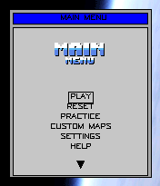
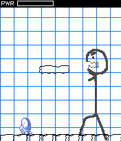
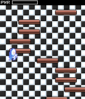
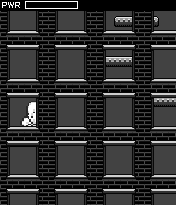
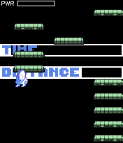
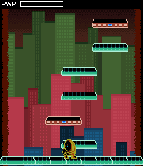
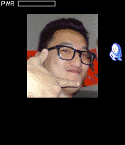
The MOTODEV Game Developer Challenge was opened to contestants on Feb 21 and ran until Aug 10, 2007. Around mid-March, I had registered an LLC along with a domain name for the competition. Shortly afterwards, I notified my employer at the time, airG, that I was parting ways. I hadn't given an exact reason for why I was leaving, just that I was leaving. Part of the reason may have had to do with what I witnessed when a former colleague, after having a baby, attempted to leave for greener pastures to another mobile developer. They had prevented him starting his new job over worries that he would take over trade secrets or other intellectual property. As my last few days of employment were closing in, I recall being excited about the competition, to the point that when I had to dinner with a few college classmates and colleagues I was close with. I secretly let them know that the reason I was leaving was to enter the competition. The competition itself had no huge prize or payout. The prize was nothing more than a publishing contract with a mid-tier mobile game publisher and some free Motorola devices. But, the prizes didn't matter to me so much as the competition itself. It was, I was hoping, the start of something bigger.
Between late March and early April is when I officially began work on my entry. My original odea for my entry was a 2D MMO virtual world, similar to Habbo Hotel but for mobile phones. I had pitched a similar idea to one of airG's directors a while back while still employed there. I had fixed a costly bug on a flagship phone that was preventing airG's app from shipping on the device, and so as a reward he had taken me to a lunch. I recall that he wasn't entirely enthused by the idea. While he hadn't fully articulated the reasons, there were likely a few. The first was fit. At the time, airG made a popular social networking app, not games. The second was how much of an uphill climb it would be. Even if airG did make games, such a game would be resource-intensive to make and it would be challenging for it to become a commercial success. The third was technical feasibility. The mobile phones of the era were severally resource-constrained. Devices often only had hundreds of kilobytes of heap, 1 to 10 megabytes of persistent storage, and screens dimensions between 100 to 200 pixels. Even if those constraints weren't there, Internet connectivity was a problem. It was slow, inconsistent, heavily metered, and was billed based on usage. You didn't have to do a lot to get a big Internet usage bill.
Even with all of those hurdles, I still wanted to try. At the time, I had around $7,500 in my name and was still living in my childhood home in the same bedroom I grew up in. Before I could do anything, I needed a KRZR K1 or similar device. I went to a local store selling imported handsets and picked up the closest device they had on-hand to the KRZR K1, which ended up being the Motorola SLVR L7, along with a Samsung SGH-D520 just so I had another device I could try playing the game on. I then decided to black out my bedroom windows with a thick blanket and duct tape to prevent being distracted by outside light seeping in. I started out by making a plan. I charted out tasks and estimates in a GAANT chart, mocked out a UI flow, and mocked out a simple map that would be the base of the MMO. The idea was to have it be a platform more so than a game. Scripts would drive logic, where those scripts and related assets would flow in directly off of the Internet. The ultimate goal was to have users generate their own content that made up a massive explorable world.
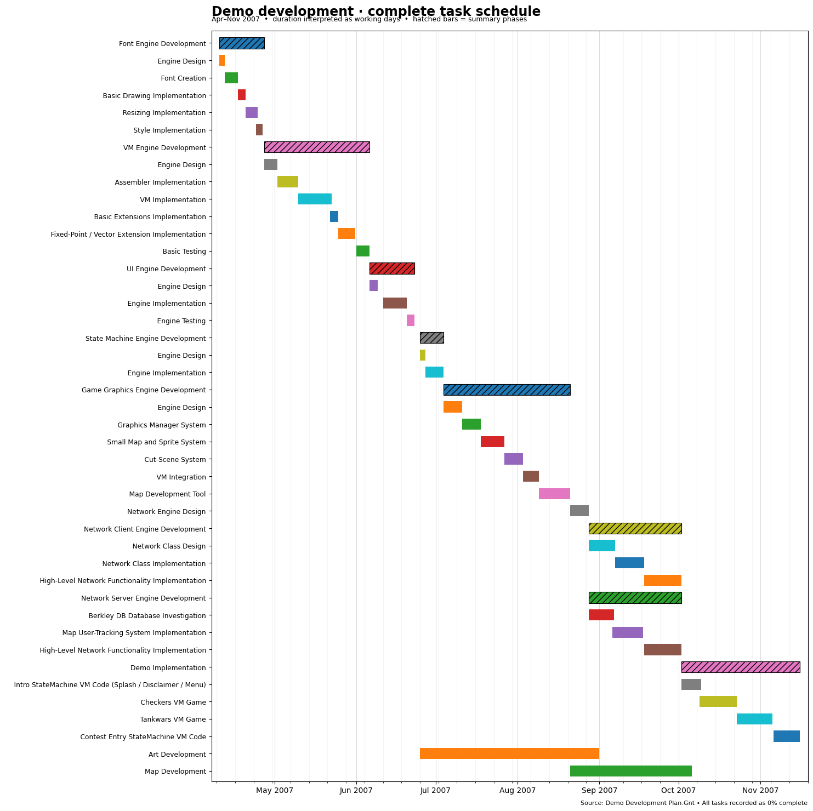
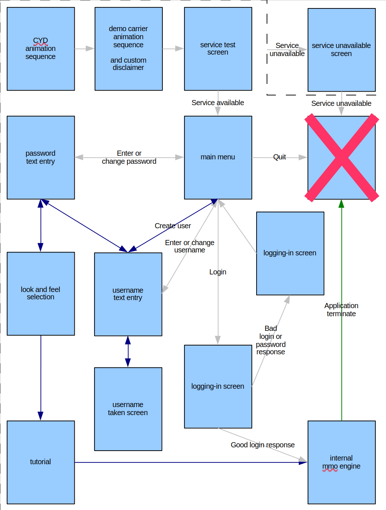
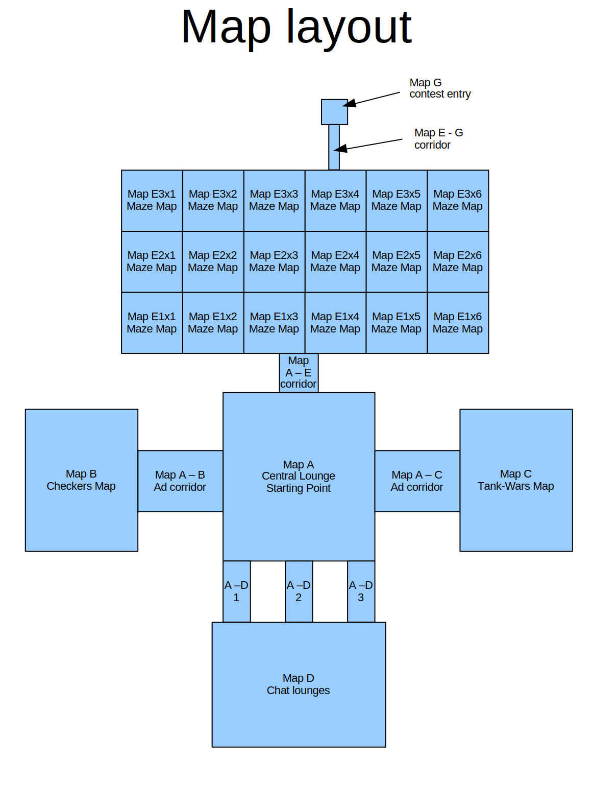
From a technology perspective, everything in that GAANT chart and those mockups were attainable, but not for a single developer with 3-4 months of time. The timelines within the chart, which were already wishful thinking to begin with, showed that development would stretch past the competition's deadline of early August. As such, the MMO wasn't possible. Nevertheless, there were components in the GAANT chart that I figured would be needed regardless of what game I ended up making, and so I began working on them while I thought of alternative game ideas.
Between April 3 and 10, I implemented the font engine. Java-enabled phones of that era didn't normalize to a single specific font for all applications to use. Instead, each class of device had its own font and it was impossible to switch out to a different one. For example, the exact same app running on a Nokia S60 vs a Motorola KRZR would look different, because, among other reasons, the font used to render out a string of text was different. Most developers would work around this problem by using bitmap fonts, an image consisting of a grid of characters. I chose a different approach for my font engine. Somewhere along in my engineering journey, I came across Hershey vector fonts, which were simple fonts defined as a chain of connected line. They were free, easy to decode and render, and easy to apply transformations to such as rotating and scaling.
Between April 12 and April 14, I implemented a lightweight huffman tree. A huffman tree implementation wasn't part of the GAANT chart, but I figured that there would be some networking aspect to the game and so I wanted my network traffic to be compressed to keep things efficient. Less data being sent over the Internet meant there was less potential of chewing up the player's mobile Internet quota (and hopefully less likely that they'd end up with a large bill). There were no built-in compressions packages in Java phones of that era and simple Java open-source implementations intended for resource-constrainted devices weren't all that prevalent. Huffman was more or less the most advanced compression algorithm that I'd internalized and was comfortable with.
From April 14 to May 3, I implemented the virtual machine and assembler. The intention with the virtual machine was to drive the game's logic and animations, similar to how the the original Quake engine had a virtual machine the enabled Quake's gameplay as well as its near endless modifications. The virtual machine and assembler were both very basic. The virtual machine had opcodes similar to that of Java's virtual machine, and the assembler's syntax was similar to assemblers I had come across in my teens.
From May 4 to May 7, I implemented audio and image functions. The functions, I had figured, would be helpful for whatever game I ended up with. There was a software audio mixer I wrote that turned out to be a failure. While the emulator would successfully mix the audio sources, the device itself wouldn't. There was also an image transformation suite which contained common manipulations such as scaling, rotation, colorization, brightness, and contrast.
Full coding timeline analysis
| Revisions | Date range | What changed |
|---|---|---|
| 0 | Apr 3 | Empty repository. |
| 1–17 | Apr 11–14 | Built Hershey font conversion and rendering, then added word wrapping, resizing, and Huffman compression. |
| 18–39 | Apr 21–May 3 | Added an assembler and VM instruction set, generalized the VM, and built J2ME benchmarks and runtime support. |
| 40–56 | May 4–7 | Added WAV mixing and image/PNG tools, palette replacement, graphics management, and tiling. |
| 57–83 | May 8–12 | Added game canvas, sprites, scenes, music, logo animation, and text handling; adjusted loading and key-repeat behavior for phones. |
| 84–124 | May 13–31 | Added menus, windows, dialogs, persistent storage, and image rotation; refined text layout and fixed device/input bugs. |
| 125–131 | Jun 2–4 | Added Micro3D-related tools and scrolling/physics code; comments note unfinished gravity and offset behavior. |
| 132–150 | Jun 4–14 | Added the first large Mad Kaz implementation, including its VM, gameplay, collisions, and image/resource handling. Later changes renamed the play canvas and optimized performance; one replaces many `StringBuffer` UI values with `char[]`. |
| 151–168 | Jun 14–19 | Expanded game-specific VM operations for state, input, effects, and timers. Added custom-map UI and began network access. |
| 169–193 | Jun 20–28 | Added network map downloads, local storage and browsing, and tools to package downloadable levels from XML. Extended gameplay controls, sprites, and graphics parsing. |
| 194–203 | Jul 1–3 | Prototyped Bluetooth multiplayer and menus, then added a credits sequence and gameplay/timing fixes. |
| 204–213 | Jul 5–10 | Added an automated-scene engine and tests, then connected scene behavior to the game and SDK. |
| 214–227 | Jul 12–21 | Added configuration storage, level selection/unlocks, and substantial zone and level content. |
| 228–246 | Jul 22–27 | Removed the unplayable multiplayer path, added peer-to-peer custom-map transfer, and optimized level packaging with an indexed combiner. Reorganized zone 6 as zone 5. |
| 247–268 | Jul 27–28 | Revised setup, credits, copyright/license text, and packaging; removed map compression; reorganized into trunk/tags and created MOTODEV/alpha snapshots. Added a downloadable “Space Quest” map. |
Sometime between early to mid-May, I decided that the game I want to implement would be a re-imagining of NS-SHAFT and NS-TOWER blended into one. NS-SHAFT and NS-TOWER were introduced to me by a college classmate as a way of killing time while we were held up in the computer labs. The twist with this re-imagining was that it'd be narrative experience, with zones and levels, where each level would be unique in terms of graphics, audio, and gameplay mechanics. I came up with a set of levels that I wanted to the game to have. The title character, Mad Kaz (that's me, I'm Kaz 🙂), would climb up from inside the Earth and eventually out into space, before encountering a boss battle and falling back down to Earth. I named it Mad Kaz: The Beginning.
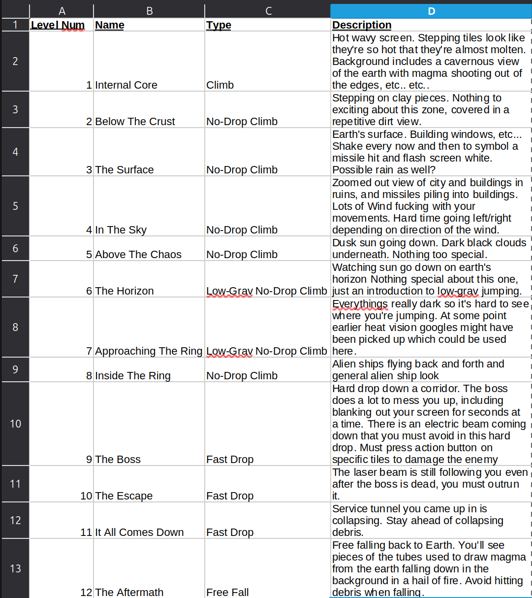
Shortly after, I began seeking out artists to help piece it out together. For the concept art, I contracted out to an old highschool classmate, William, to create some basic sketches. There was no direction, I just asked him to envision how something like this would look and sketch it out. For the pixel art, I found a talented pixel artist online through PixelJoint, Mykola, who was based in Ukraine. He agreed to a contract to help convert the concept art into pixel art. Some of the art he built for the game is still on his old PixelJoint profile here and here.
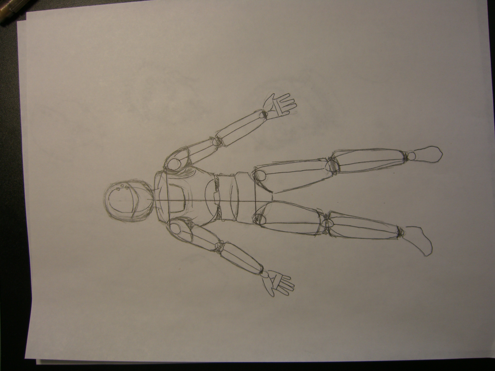
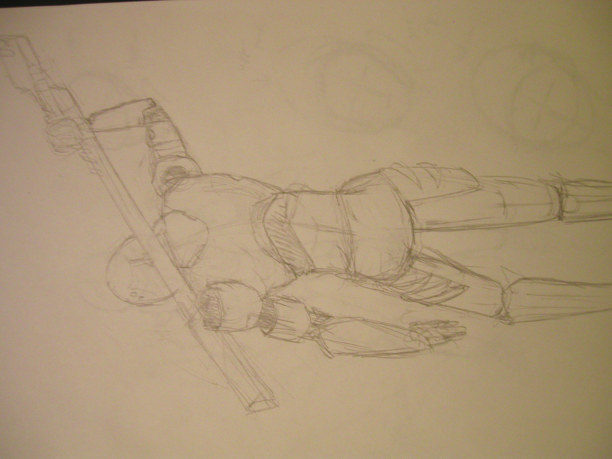
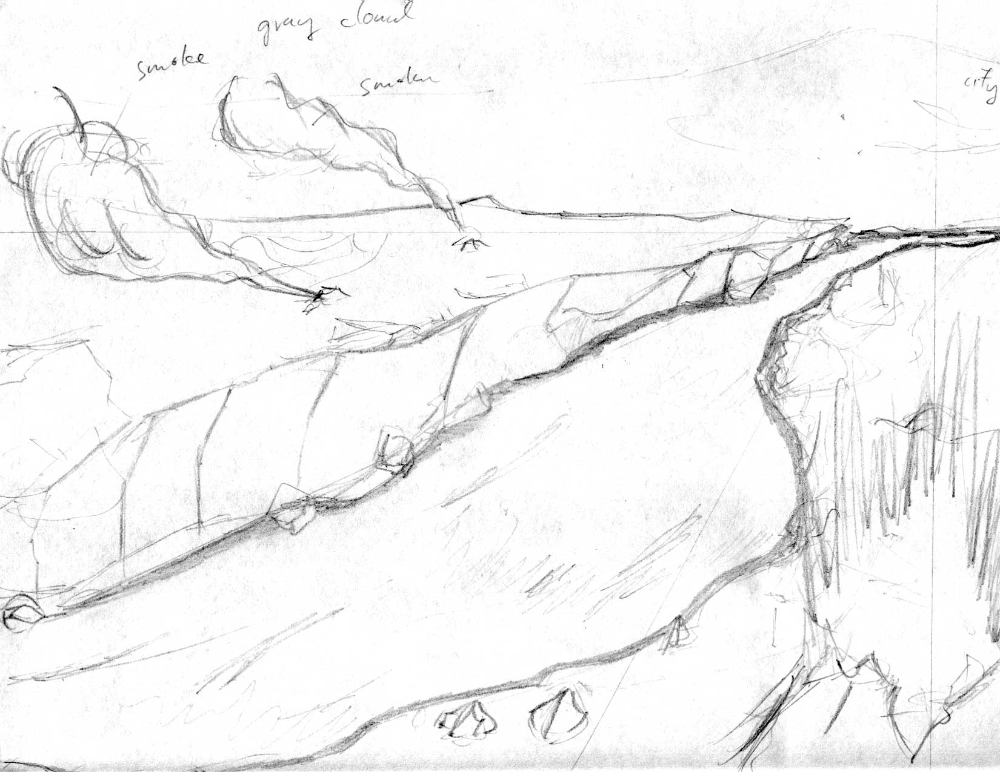
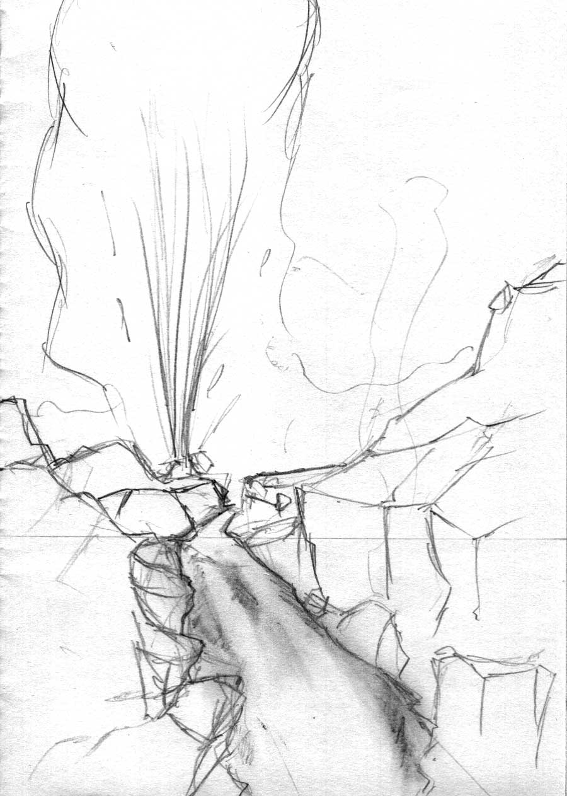
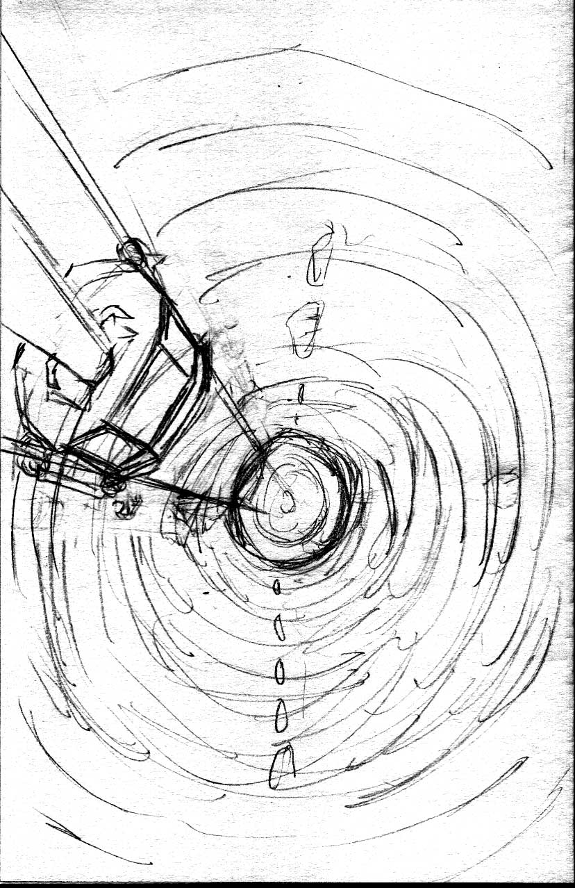
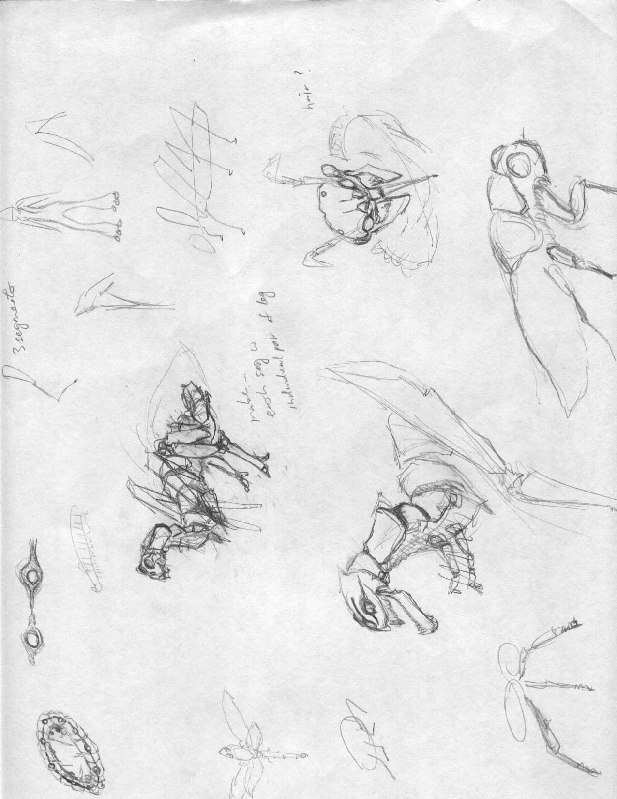
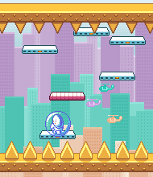
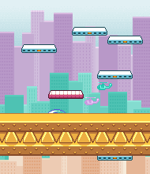
Even with a concrete plan and the extra help, it turned out that it was still too ambitious. The roughly 3 remaining months wasn't enough time to complete on both the game's engine and build out that much game logic and art. Pixel art didn't start flowing in until mid-June. I hadn't begun coding up the majority of the game's levels, outside of a few practice levels, until mid-July. Before that, I was still primarily trying to put the pieces of the game's engine together. In old emails from Mykola, I could see that I was breaking under the pressure. I ended up deciding to reduce the number of levels and restructure such that where each level was actually a zone with multiple levels that re-used assets and had similar game logic, similar to original Sonic The Hedgehog games. I was fleshing out these zones up until the very end. There wasn't enough time to balance any of the gameplay. Even if there was, I don't think I had it in me to know what fair balancing would entail or feel like.
Pixel artist responding to my email crashing out
From: Mykola <mykola31@gmail.com> To: Kasra F. <kasraf@codeyielddevelopment.com> Date: Wed, 13 Jun 2007 02:49:06 PDT Subject: Re[2]: Progress?
Man what the hell, don't get pissed.
look I told you I got sick with flu last week, I know you're pissed by it but
so am I - cuz there's nothing I could do about it.
I'm still not 100% but now I can at least use my computer normally so
things should be ok.
I'm absolutely not gonna drop out, that's for sure. Don't panick man!
Please.
NOW. on to the game itself.
I like both the music and the concept art. music is a good fit to the
game I believe.
I attached some gfx you requested first. some floor tiles + the player
sprite.
notes:
- the concept art doesn't count the fact that the player sprite is 24x24
though :D, so naturally it's going to be much more cartoony
proportions a la the ns tower dude.
I only did the static frame for the dude, if you like it I'll animate
the motions.
(as you can see the style of character is in large part inspired by
mega man 16bit games, and I hope you like the idea, I'd really like to
have that colorful vivid look to the game)
- you told me the engine can flip gfx, how about flipping some tiles
randomly? I think some levels especially the early ones would benefit
from that in diversity.
- all tiles are slightly bigger than 42 x 10, so just center the
collision rectangle around the center of respective tile.
(also the tiles sheet layout is kind of not too optimized I guess I'll have
to rearrange it once the tiles are all done).
- notice that some tiles will use faux perspective (you've seen that
in some platform games before), so for those jsut put the collision
rect a bit down.
let me know what you think bout these :) and then I'm moving on to
more gfx.
With the exception of zone 6, which was just a single level acting as an outro that pays homage to friends and those who worked on the game, I had forgotten about the actual levels and content within each zone. I asked AI to go through the files and give a rundown:
Level analysis
Mad Kaz shipped with six zones. Each zone takes the same basic vertical-platforming system and changes it around a different idea.
Intro — movement and control.
Free Drop introduces falling and horizontal movement. Free Climb reverses the objective and introduces charged jumps. Limited Climb removes horizontal control and airborne charging. Limited Climb 2 adds failure for falling outside the visible area. Hard Drop returns to descent under greater pressure. The abstract grid presentation fits the zone's role as a tutorial and movement test.
Homework — platform physics.
Homework Intro introduces platforms with different jump properties. Sunset City reuses those mechanics under a time limit. The three Bomby Sunset stages turn the game into a long descent involving a falling bomb, with platforms having a stronger effect on downward speed in each stage. The Great Escape turns falling speed into attack strength: landing on a specific upper platform sends out a wave that pushes back the giant stickman boss, with harder landings creating a stronger effect. The zone takes platform behavior from a basic movement property and turns it into part of the game's combat.
Hippie — perception and instability.
The zone is built around hallucination. Psychedelic constantly changes the background colors. The Confusion stages make platforms and backgrounds harder to tell apart by reducing the number of colors and changing the background to match the platforms. Flashbacks reuses imagery from the previous Homework zone, making the idea of a hallucination literal. Checkers uses a high-contrast checkerboard environment to interfere with spatial perception. Day Dreams generates two different platform layouts and switches between them. The progression moves from unreliable visuals to unreliable level geometry.
Time Trials — indirect control.
The five stages increase from 200 to 400, 800, 1600, and 2000 floors, with a target time of 2:56. Direct horizontal control is restricted. Different platforms change horizontal speed, direction, or jump power, so the player has to use the platforms themselves as a form of steering. The levels stay mechanically similar while becoming much longer. The main challenge is route planning, time pressure, and endurance.
Giagantor — mass, impact, and environmental feedback.
The story says that Mad Kaz has been turned into a giant, and the mechanics treat his weight as a problem.
In the Tippy Toe stages, landing too hard can cause failure. Landing speed also controls screen shake and phone vibration. Later stages space the platforms farther apart, making soft landings harder.
Inner Tippy Toe keeps the same impact system but hides platforms behind a building facade. The shaking caused by landing is no longer just feedback; it also helps the player make sense of an environment that is difficult to see.
Climb to Space changes the source of the danger. Authorities attack from the sides with bright beams, and screen shaking warns that the beams are about to close in. Each stage makes the attack faster and gives the player less room for error.
Across the zone, the same kind of feedback changes purpose: the player's weight creates danger, shaking becomes information, and then shaking becomes warning.
Author — credits as a level.
Authors and Friends displays a timed sequence of photographs before the stage ends. The credits are implemented through the same level scripting system used by the rest of the game instead of through a separate credits system.
Analysis
Mad Kaz changed significantly during development. An earlier design document describes a twelve-stage story where Mad Kaz starts deep inside the Earth, climbs to the surface, continues into space, fights a boss, escapes, and then falls back to Earth. The planned levels included lava, wind, low gravity, darkness and heat vision, missile impacts, aliens, screen blackouts, an electric beam, collapsing tunnels, and falling debris. Concept art from the same period shows lava fields, a city, tunnels, and alien designs.
The shipped game is very different. Instead of one continuous story, it is divided into zones built around different gameplay ideas. Some parts of the earlier design seem to have survived in changed form. Restricted climbing became a repeated rule. Darkness and alternate vision became the Black Out and Stalker modes. Screen shake became an important part of Giagantor. The beam attacks and climb into space returned in Climb to Space. Fast falling and escape pressure show up again in Hard Drop and the Bomby Sunset levels.
This change also made the game easier to finish. A long story campaign would have needed more unique art, environments, events, and level-specific logic. The zone structure made it possible to reuse art and related mechanics while letting the scripting system change movement, collisions, visuals, timers, hazards, and other rules.
Mad Kaz therefore started as a more traditional, story-driven journey and evolved into something stranger and better suited to its programmable engine: a collection of themed changes to the rules of one core platformer. That change is probably why the final game does such a good job of showing what the VM could do.
The final paragraph hit the nail on head: "Mad Kaz therefore started as a more traditional, story-driven journey and evolved into something stranger and better suited to its programmable engine: a collection of themed changes to the rules of one core platformer. That change is probably why the final game does such a good job of showing what the VM could do." In the end, Mad Kaz wasn't so much a game as much as it was a tech demo for a game engine that I had built in those 4 months. Those 4 months weren't enough time for me to build out both the engine and the game, and so the game ended up simply being unbalanced levels that tried to shove in as many game engine features as possible.
I submitted Mad Kaz into the competition on July 29th, 2007, about 2 weeks before the August 10th deadline. A confirmation email arrived the next day, and that was it. I never heard back from the people running the contest about their thoughts on Mad Kaz or how it ranked against other games in the competition. I showed the game to a couple of my real life friends and they thought it was alright. I had an online friend load it up on his phone and give it a try, he thought it was alright. I posted some screenshots in an IRC chatroom, to which someone replied saying the graphics were bad. I emailed my father informing him of what I was up after 4 months without work, to which he replied with the common encouraging words that parents are known to say to their children. And that was it. Looking back, I wish there was something more to make it more triumphant or satisifying in the end, but I recall feeling dejected immediately after submitting it. Maybe it was because my entry wasn't as polished as what I was hoping for, or maybe it was from putting myself through 4 months of self-imposed abuse and verging on being broke.
Email to father
Around that time, I was using a spreadsheet to keep track of my checking and savings balance. The records show that I started the competition with around $7,500 in my name. By the time I submitted Mad Kaz in late July, I had around $1,500. By September, it went down to $1,100. October, it went further down to $600. In early August, shortly after the submission was in, I began looking for work again. I sent applications to whatever places were looking to hire, but I was also trying to leverage my work on Mad Kaz to get hired as a game studio. I had decided to open-source the game's code and assets so potential interviewers could review what I did and hopefully come to the conclusion that I'm skilled enough.
I had submitted applications to Radical Entertainment, Threewave, Blue Castle Games, and a mobile game developer named IUGO. None of these studios are around anymore. The application to Radical Entertainment went nowhere. Threewave had me fill out a questionnaire and did scheduled a phone screen afterwards, but ultimately it didn't move forward either. I knew Threewave from their work on the Threewave CTF mod for Quake 1, which I regularly played growing up. Blue Castle Games had me come in for an interview. It didn't go smooth. They were hiring for a junior network programmer position for Dead Rising 2. I might have felt like I would be a shoe-in for this position because network programming for twitchy games was something I often thought about - how to handle unreliability and extrapolate movement to hide latency, mtu, dropped packets, etc.., mostly because of the stories I heard about QuakeWorld's networking code. It was the first time I was asked to sign an NDA prior to an interview, and it was also the first time I was subjected to the typical software engineering interview hazing rituals that were popularized by Google around that time. One of the interviewers had went through Mad Kaz's code and decided to give me a shit test by making a snide comment, "so this virtual machine of yours, all it is is a for loop?", to which I didn't give him the reaction that he wanted. They also decided to give me a brainteaser riddle at the end, the 3 prisoners hat riddle, which I didn't even attempt to answer. I recall during one part of the interview where I was whiteboarding and talking out a problem they gave me about how to model zombie movements, and one of them jumped in with a question to which I, without thinking, blurted out "wait, shut up", as a new thought entered my head. Needless to say, the interview was a disaster. IUGO also had me come in for an interview. The owner and everyone were very kind to me. I remember one of my old college classmates was working there as well. They had me sit down and fill out a stack of papers full of gaming coding and design questions. I recall that, when I was done, the interviewer just threw it to the side, saying something to the effect of "i don't need to look at it, i know you know your stuff". At the end of the interview, I think they gave me an offer or if they didn't they were on the verge of giving me an offer. I ended up walking away. I don't recall exactly why. It might have been because the interview at Blue Castle Games was coming up the next day, or I may have been feeling too full of myself and gunning for a more senior role, or it may have been because the office felt uncomfortably bright. It was a very sunny that day and the I recall the IUGO offices were letting a lot of that sun in. I had spent most of my time building Mad Kaz in a blacked out room.
In the end, I needed money and so I accepted a job at a company that made software to sync calendars between Google calendar and Outlook, making less than that job that I resigned from.
When I ask AI to do an in-depth analysis of Mad Kaz and compare against the closest known contemporaries of its time, here's what it says:
As executable software, its value is low. The original services are not demonstrably operational today, the MIDP/JSR-82 deployment environment is obsolete, and the supplied source/build infrastructure requires reconstruction. The old project endpoints were not accessible through my current web checks.
As technical prior art, its value is much higher. It documents a complete pre-smartphone attempt at programmable mobile UGC before EA was publicly marketing phone-created/shared levels in Boom Blox in 2008. That does not prove influence, but it is historically significant chronology.
As an educational artifact, it remains unusually rich: constrained bytecode-interpreter design, compiler/runtime agreement, custom packfiles, capability narrowing, J2ME rendering, RMS persistence, HTTP retrieval and Bluetooth protocols all exist together in source.
Its most useful lesson today may be the contrast inside the same artifact: very strong systems ambition and product integration can coexist with weak sandbox resource governance, weak reproducibility, poor author tooling and almost nonexistent verification evidence.
The project was therefore not “mediocre.” It was exceptionally ambitious and probably highly original at its actual product layer, surprisingly complete, technically sophisticated, and simultaneously far too brittle to deserve a strong production-engineering rating.
Nothing in Mad Kaz was an original idea, but the collection of all of it's constituent pieces together made for something that no one had attempted before on mobile phones. It was the collective, blended, result of my experiences around gaming and coding, starting from my childhood, to my time at college, all the way up to the job working on mobile phone apps that I ultimately resigned from to enter the competition.
The idea for a virtual machine came from the original Quake game as well as Java. I had grown up playing Quake, a game I was never very good at but always loved because of how QuakeC and the accompanying virtual machine enabled a near endless amount of mods and maps to be produced (Threewave CTF, Future vs Fantasy, Rocket Arena, AirQuake, Team Fortress, Quake Rally, and Cujo were some of the ones I remember). Similarly, in highschool we had programming classes where we learned how to code in Java 1.2, and somewhere along the line I eventually became aware that Java's write-once run-anywhere claim was possible because there was virtual machine and interpreter sitting in between.
The idea for bluetooth transfers and Internet downloads of new levels, which was possible because the virtual machine, was also heavily inspired by Quake and the myriad of later games that had similar technology. My earliest recollection was QuakeWorld, where a client would download a map from the server if it didn't already exist. The only thing that was different with Mad Kaz's implementation was that it was on a phone, and phones of this era were severely resource constrained.
The image manipulation package had modules for resizing, rotation, pixel post-processing, and editing PNGs. The ideas behind those modules came from a few different places. I likely was introduced to the concept of non-trivial resizing and rotation back in college. That same classmate who introduced me to NS-SHAFT and NS-TOWER had decided one day to kill time by writing code to resize an image using bilinear scaling. I don't recall if we knew that it was called bilinear scaling at the time, he was bright and it's entirely possible that he reasoned about the entire process on his own, but it was something that stuck with me as a core memory and likely was the seed for the image rotation and resizing in Mad Kaz. Those operations required rational numbers but many phones at the time, including the Motorola KRZR, either didn't support floating point or did support it but it wasn't fast enough for heavy usage (e.g., emulated through software). Somewhere along the way, either at my employer or earlier, I had learned about fixed point math and lookup tables. I recall having thought up the idea of using fixed point math to help implement a progress bar in one of airG's apps. Mad Kaz's image manipulation used basic fixed point math arithmetic and built-out lookup tables for trig functions such as sine to do the math for resizing and rotation.
The PNG editing module was from an idea I overheard one while working at airG. I recall overhearing more senior engineers discuss how someone they knew wrote code to go in and edit a PNG file's palette at runtime. I ended up going to a popular website known for documenting file formats at that the time (wotsit.org) and pulled out the file format for PNGs, then spent a few days at work playing around with it trying to come up with interesting things to do with it. I recall implementing a night-vision style effect where map tiles were green-scaled but sprites were fully bright green. I took that same idea of runtime palette manipulation and pushed it into Mad Kaz's engine. Space on the device was limited so it wasn't like you could have tens of different variants of the same tile and sprite sets, but you could use this to manipulate the source image's content and load it up multiple times.
The list goes on and on. It was all prior art that, at some point or another, I had experienced and internalized in some way.
Looking back, this story's archetype wasn't uncommon for the mid-to-late 2000s era of computing. A young individual, inexperienced but full of spirit / full of themselves, and having grown up with video games of the 1990s and early 2000s, saves up just enough money to leave whatever it is they're doing to gamble on making their own indie game. Their hope is that what ends up coming out is both worthwhile and accepted by the market, similar to Commander Keen, but more often than not that ends up not being the case and what they're left with is a set of humbling experience. Dreaming up an idea only to have to continually water it down at each stage, hoping people you're relying on will be able follow through in time, having to explain to loved ones why you willingly left behind gainful employment, watching what little money you have evaporate, and ultimately starting with hope and ending with the bittersweet feeling of completing what you set out to do only to crawl back to the grind. In the end, I'm grateful that I actually managed to produce something to submit for the competition, even if it was a shell of what I originally planned for.
CONTINUE HERE
CONTINUE HERE
CONTINUE HERE
CONTINUE HERE
CONTINUE HERE
CONTINUE HERE
. At the time, I had around $7,500 in my name and was still living in my childhood home, in the same bedroom I grew up in. I had decided to black out my bedroom windows with a thick blanket and duct tape to prevent being distracted by outside light seeping in. Over those 3 months, I spent my waking hours putting in as much work into the game as I could. Most of that was coding, but it also included doing some design work and coordinating with a couple of artists and a web designer that I had hired, two of which were old highschool classmates.
When I had started work in early April, my original idea was to attempt a 2D MMO-style virtual world platform, similar to Habbo Hotel but for mobile phones. I had made a GAANT chart as well as a UI flow mockup and a mockup of a simple map that would demo the features of the platform. The idea was to have a platform that could be scripted on, where those scripts and related content would flow into the map directly off of the Internet, with the ultimate goal being that users would generate their own content.
It was too ambitious for a single developer with 3 months of time. The tasks and timelines within the GAANT chart, which were already wishful thinking, showed that development would stretch way past the competition's end date of early August. Even if it were all doable, it wouldn't have made for a good user experience given that mobile phone Internet connections of that era were slow, flakey, and had metered billing.
Sometime between mid-April and mid-May, I had decided to drop the MMO idea and instead refocus my submission into a platformer similar to NS-SHAFT and NS-TOWER. Many of the same tasks within the GAANT chart would still be there in the game, comprising the game's underlying engine, but the idea was that the game itself would be much quicker to implement and debug. I came up with a set of levels that I wanted to the game to have, where the title character (Mad Kaz, that's me :smile:) would climb up from inside the Earth and eventually out into space, before encountering a boss battle and falling back down to Earth.
Even this, it turned out, was still too ambitious. Those 3 months weren't enough time to complete on both the game's engine and build out that much game logic / game art. I ended up reducing the number of levels to 6, where each level was actually a zone with multiple levels that re-used assets and had similar game logic (similar to original Sonic The Hedgehog games). There wasn't enough time to balance the gameplay for these levels. Even if there was, I don't think I had it in me to know what fair balancing would entail or feel like. With the exception of zone 6, which was just a single level acting as an outro that pays homage to friends and those who worked on the game, I had forgotten about the actual levels and content within each zone. I asked ChatGPT to go through the level scripts and give a rundown:
ChatGPT's analysis
There are **six shipped zones**. The submission document confirms six; the help text saying “7 zones” looks like a stale string.
The strongest pattern in the assembly is that the zones are not just graphical themes. Each one takes the same basic vertical-platformer machinery and explores a different idea:
**Intro = control**, **Homework = block physics**, **Hippie = perception**, **Time Trials = indirect control**, **Giagantor = impact/environmental feedback**, **Author = credits implemented as a level**.
### Intro
This is a deliberately constructed tutorial rather than five generic easy stages.
- **Free Drop** — Fall to the bottom with normal left/right steering. It introduces falling and horizontal control with almost nothing else to think about.
- **Free Climb** — Reverses the objective: climb upward, introduces charging jumps with `7`, permits steering and charging while airborne.
- **Limited Climb** — Removes much of that freedom: no horizontal control and no charging while airborne. Now the player has to commit to trajectories.
- **Limited Climb 2** — Adds the rule that falling out of view means failure. The camera itself becomes part of the constraint.
- **Hard Drop** — Flips back to descent, but platforms are much more sparsely generated and falling behind the scrolling progression kills you.
The idea seems very systematic: **teach the unconstrained movement model, then progressively remove freedoms and finally test the player under pressure.** The abstract grid artwork fits that purpose—it looks more like a training environment than a story location.
### Homework
This is where the game starts demonstrating why the VM mattered: levels begin changing what platforms *mean* rather than merely changing their positions.
- **Homework Intro** — Three platform types produce different jump strengths. The script assigns roughly `0x90`, `0x110`, and `0x7f` power. The description explicitly asks the player to experiment and discover them.
- **Sunset City** — Uses the same platform vocabulary, but adds a roughly 50-second deadline. The notebook/graph-paper artwork gives way to a city, sun and birds: what was just a tutorial mechanic is now placed inside a scenario.
- **Bomby Sunset 1** — A very long descent to warn the city about a falling bomb. Hitting platforms while falling fast reduces your vertical velocity rather than simply stopping you.
- **Bomby Sunset 2** — Same basic scenario, but collisions remove much more velocity.
- **Bomby Sunset 3** — Platforms now stop the descent outright. The three Bomby levels are essentially a controlled parameter progression: **mild collision penalty → severe penalty → complete stop**.
- **The Great Escape** — The standout. A giant stickman advances toward you. Landing on the special upper platform fires a “math wave”; the amount the boss is pushed back is derived from your falling velocity when you land. Survive for 40 seconds.
`mk_1.png` is this boss fight: graph paper, giant stickman, Mad Kaz, and the wave between them.
The clever part of **Great Escape** is that the game doesn't suddenly introduce a conventional attack button. It turns a mechanic the player already understands—**falling velocity**—into attack strength. Homework as a whole moves from learning unusual platform properties to deliberately exploiting physics.
### Hippie
This is fundamentally a **perception-manipulation zone**. The scripts increasingly make what the player sees unreliable.
- **Psychedelic** — The background changes through randomized colors essentially continuously. Mostly perceptual disruption rather than mechanical complexity.
- **Confusion 1** — Standing on a colored platform changes the entire background to that platform's color.
- **Confusion 2** — Reduces the available colors to four.
- **Confusion 3** — Three colors.
- **Confusion 4** — Two colors.
- **Confusion 5** — Retains the two-color confusion but now falling means immediate failure.
The reduction in colors is interesting: rather than making the screen more colorful each time, the levels progressively make **foreground and background harder to distinguish from one another**.
- **Flashbacks** — This is more literal than its description suggests. The script actually loads imagery from the previous Homework zone—its graph paper, giant boss and wave—and makes those elements appear/disappear and move around. The “mental flashbacks” are genuinely flashbacks to things the player has already encountered.
- **Checkers** — Uses the high-contrast checkerboard filling visible in `mk_2.png` to interfere with spatial perception.
- **Day Dreams** — Probably the strongest idea in the zone. The level generates **two different platform maps** and swaps the active map every five seconds, while also manipulating color. The player isn't merely seeing hallucinations: the platforms they're navigating effectively alternate between two realities.
So Hippie progresses from **visual noise → figure/ground confusion → recollection of earlier gameplay → actual instability of level geometry**.
### Time Trials
Five levels:
**200 → 400 → 800 → 1600 → 2000 floors**, all nominally within **2:56**.
The `800 Floor Sprint` description accidentally says “600 floor sprint”; the assembly really does specify 800.
These are mechanically almost the same level at increasing scale, but the mechanic itself is unusual:
- You get a five-second countdown.
- Direct left/right control is disabled.
- Different platforms alter your horizontal velocity.
- One type makes motion much faster in one direction than the other; another reverses that relationship.
- Other platform types alter jump power.
- On leaving them, your normal horizontal rate is restored.
So when the instructions say “use the blocks to your advantage,” that's literal: **the platforms substitute for the steering controls**. You navigate by choosing which physical behavior you want your next landing to give you.
`mk_4.png` shows the specialized TIME/DISTANCE HUD.
The zone's idea is essentially **route planning under indirect control**, followed by escalating endurance. It also demonstrates that the scripting system could turn the same basic character controller into something that feels mechanically different without modifying the Java engine.
### Giagantor
This has the strongest integration between narrative and device/game effects. The story says you've become enormous; the mechanics revolve around **your weight disturbing the environment**.
- **Tippy Toe 1** — Descend 500 floors. Landing too hard causes failure. Landing velocity also drives screen shake and phone vibration.
- **Tippy Toe 2** — Same rule, but platforms are farther apart.
- **Tippy Toe 3** — Farther apart again, making soft landings increasingly difficult.
So “don't attract attention” is represented through actual **impact velocity**, not an arbitrary stealth meter.
- **Inner Tippy Toe 1** — You enter a building, but the level is presented as though viewed through its exterior facade. Platforms are obscured. The instructions explicitly tell you to use the shaking caused by your landings to work out where hidden platforms are.
- **Inner Tippy Toe 2** — Same idea with sparser platforms.
`mk_3.png` is almost certainly this portion: the character is behind a brick building facade/window grid.
This is one of the more inventive uses of the engine: **screen shake changes from feedback into information**.
Then the zone changes direction:
- **Climb to Space 1** — 900-floor ascent. Authorities attack from the sides with bright beams. Screen shaking warns that they are about to converge, giving you time to move toward the center. Four hits kill you.
- **Climb to Space 2** — Beams converge faster; only three hits.
- **Climb to Space 3** — Dramatically faster convergence; a single hit ends the level.
The assembly implements the attack partly by moving the permissible side boundaries inward. Again, the presentation is built out of changes to the underlying game rules rather than a conventional enemy subsystem.
The zone therefore has a nice internal progression: **your giant size makes your own movement dangerous → environmental shaking becomes useful information → the same shaking becomes a warning of an external attack.**
### Author Zone
One level:
- **Authors and Friends** — A photo changes automatically every 15 seconds: Kasra, Mykola, Xonic, Farzad/Farshad, James “Ghaleon,” then Ed “Eduardo.” Once the sequence finishes, the level completes.
`mk_6.png` shows it in action.
There is a very 2007-J2ME technical detail in the assembly: after changing pictures it explicitly invokes garbage collection, presumably because keeping several full-screen images around on the target heap was undesirable.
It's essentially a **credits slideshow implemented as another programmable level** rather than as a bespoke credits subsystem, which is itself a nice demonstration of what the VM could do.
### The earlier design is especially revealing
`documents/original_level_ideas.ods` contains what appears to be an earlier campaign concept, and it is **radically different** from what shipped. It outlines twelve sequential levels:
**Internal Core → Below The Crust → The Surface → In The Sky → Above The Chaos → The Horizon → Approaching The Ring → Inside The Ring → The Boss → The Escape → It All Comes Down → The Aftermath.**
The intended journey was basically **from deep inside Earth, upward through a ruined city, into space/alien territory, followed by an escape and free-fall back to Earth**. The notes mention molten environments, missiles, wind affecting movement, low gravity, darkness/heat vision, an alien boss, screen blackouts, an electric beam, collapsing tunnels and falling debris.
And there is concept art from July 11, 2007 that matches it extremely closely: drawings of **lava fields, a city, a tunnel, and alien concepts**.
What's interesting is how much of that material seems to have been **recomposed rather than simply discarded**:
- “No-drop climb” became a recurring gameplay restriction.
- Darkness/heat vision resembles the eventual **Black Out/Stalker modes**.
- Screen shaking from missile impacts became a major mechanic in **Giagantor**.
- The beam hazard and escape-to-space idea clearly have relatives in **Climb to Space**.
- Fast-drop/escape pressure shows up in **Hard Drop** and the **Bomby Sunset** sequence.
- The original plan's environmental variation was replaced by zones organized much more strongly around **specific mechanical experiments**.
The dated art packs reinforce that interpretation: July 11 contains the old lava/city/alien/tunnel concepts, while the July 17–22 material contains things recognizable from the shipped game—brick facades, checker graphics, time-trial blocks, city assets, etc.
So my read is that **Mad Kaz started closer to a linear, story-driven vertical journey and evolved into something stranger and more suited to its programmable engine: a collection of themed rule mutations built on one core platformer.** That change is probably why the final game demonstrates the VM so effectively.
ChatGPT's final sentence hit the nail on head:
So my read is that **Mad Kaz started closer to a linear, story-driven vertical journey and evolved into something stranger and more suited to its programmable engine: a collection of themed rule mutations built on one core platformer.** That change is probably why the final game demonstrates the VM so effectively.
In the end, Mad Kaz wasn't so much a game as much as it was a tech demo for a game engine that I had built in those 4 months. Those 4 months weren't enough time for me to build out both the engine and the game, and so the game ended up simply being unbalanced levels that tried to shove in as many game engine features as possible.
I submitted Mad Kaz into the competition on July 29th, 2007, about 2 weeks before the August 10th deadline. A confirmation email arrived the next day, and that was it. I never heard back from the people running the contest about their thoughts on Mad Kaz or how it ranked against other games in the competition. I showed the game to a couple of my real life friends and they thought it was alright. I had an online friend load it up on his phone and give it a try, he thought it was alright. I posted some screenshots in an IRC chatroom, to which someone replied saying the graphics were bad. I emailed my father informing him of what I was up after 4 months without work, to which he replied with the common encouraging words that parents are known to say to their children. And that was it. Looking back, I wish there was something more to make it more triumphant or satisifying in the end, but I recall feeling dejected immediately after submitting it. Maybe it was because my entry wasn't as polished as what I was hoping for, or maybe it was from putting myself through 4 months of self-imposed abuse and verging on being broke.
Email to father
Around that time, I was using a spreadsheet to keep track of my checking and savings balance. The records show that I started the competition with around $7,500 in my name. By the time I submitted Mad Kaz in late July, I had around $1,500. By September, it went down to $1,100. October, it went further down to $600. In early August, shortly after the submission was in, I began looking for work again. I sent applications to whatever places were looking to hire, but I was also trying to leverage my work on Mad Kaz to get hired as a game studio. I had decided to open-source the game's code and assets so potential interviewers could review what I did and hopefully come to the conclusion that I'm skilled enough.
I had submitted applications to Radical Entertainment, Threewave, Blue Castle Games, and a mobile game developer named IUGO. None of these studios are around anymore. The application to Radical Entertainment went nowhere. Threewave had me fill out a questionnaire and did scheduled a phone screen afterwards, but ultimately it didn't move forward either. I knew Threewave from their work on the Threewave CTF mod for Quake 1, which I regularly played growing up. Blue Castle Games had me come in for an interview. It didn't go smooth. They were hiring for a junior network programmer position for Dead Rising 2. I might have felt like I would be a shoe-in for this position because network programming for twitchy games was something I often thought about - how to handle unreliability and extrapolate movement to hide latency, mtu, dropped packets, etc.., mostly because of the stories I heard about QuakeWorld's networking code. It was the first time I was asked to sign an NDA prior to an interview, and it was also the first time I was subjected to the typical software engineering interview hazing rituals that were popularized by Google around that time. One of the interviewers had went through Mad Kaz's code and decided to give me a shit test by making a snide comment, "so this virtual machine of yours, all it is is a for loop?", to which I didn't give him the reaction that he wanted. They also decided to give me a brainteaser riddle at the end, the 3 prisoners hat riddle, which I didn't even attempt to answer. I recall during one part of the interview where I was whiteboarding and talking out a problem they gave me about how to model zombie movements, and one of them jumped in with a question to which I, without thinking, blurted out "wait, shut up", as a new thought entered my head. Needless to say, the interview was a disaster. IUGO also had me come in for an interview. The owner and everyone were very kind to me. I remember one of my old college classmates was working there as well. They had me sit down and fill out a stack of papers full of gaming coding and design questions. I recall that, when I was done, the reviewer just threw it to the side, saying something to the effect of "i don't need to look at it, i know you know your stuff". At the end of the interview, I think they gave me an offer or if they didn't they were on the verge of giving me an offer. I ended up walking away. I don't recall exactly why. It might have been because the interview at Blue Castle Games was coming up the next day, or I may have been feeling too full of myself and gunning for a more senior role, or it may have been because the office felt uncomfortably bright. It was a very sunny that day and the I recall the IUGO offices were letting a lot of that sun in. I had spent most of my time building Mad Kaz in a blacked out room.
In the end, I needed money and so I accepted a job at a company that made software to sync calendars between Google calendar and Outlook.
When I ask AI to do an in-depth analysis of Mad Kaz and compare against the closest known contemporaries of its time, here's what it says:
As executable software, its value is low. The original services are not demonstrably operational today, the MIDP/JSR-82 deployment environment is obsolete, and the supplied source/build infrastructure requires reconstruction. The old project endpoints were not accessible through my current web checks.
As technical prior art, its value is much higher. It documents a complete pre-smartphone attempt at programmable mobile UGC before EA was publicly marketing phone-created/shared levels in Boom Blox in 2008. That does not prove influence, but it is historically significant chronology.
As an educational artifact, it remains unusually rich: constrained bytecode-interpreter design, compiler/runtime agreement, custom packfiles, capability narrowing, J2ME rendering, RMS persistence, HTTP retrieval and Bluetooth protocols all exist together in source.
Its most useful lesson today may be the contrast inside the same artifact: very strong systems ambition and product integration can coexist with weak sandbox resource governance, weak reproducibility, poor author tooling and almost nonexistent verification evidence.
The project was therefore not “mediocre.” It was exceptionally ambitious and probably highly original at its actual product layer, surprisingly complete, technically sophisticated, and simultaneously far too brittle to deserve a strong production-engineering rating.
Mad Kaz was a gamble to shoot for the stars. Nothing in it was an original idea, but the collection of all of it's constituent pieces together made for something that no one had attempted before. It was the collective, blended, result of my experiences around gaming and coding, starting from my childhood, to my time at college, all the way up to my job I ultimately resigned from to enter the competition. The idea for a virtual machine came from the original Quake game as well as Java. I had grown up playing Quake, a game I was never very good at but always loved because of how QuakeC and the accompanying virtual machine enabled a near endless amount of mods and maps to be produced (Threewave CTF, Future vs Fantasy, Rocket Arena, AirQuake, Team Fortress, Quake Rally, and Cujo were some of the ones I remember). Similarly, in highschool we had programming classes where we learned how to code in Java 1.2, and somewhere along the line I eventually became aware that Java's write-once run-anywhere claim was possible because there was virtual machine and interpreter sitting in between.
Another example was Mad Kaz's downloadable levels. Mad Kaz would let you transfer levels between handsets using bluetooth, and it would also let you download levels off the Internet directly through the game itself. This feature, which was possible because the virtual machine described above, was also heavily inspired by Quake as well as the myriad of later games that had similar technology. My earliest recollection of something like this was QuakeWorld, where a client would download a map from the server if it didn't already exist. The only thing that was different with Mad Kaz's implementation it was on a phone, and phones of this era were severely resource constrained (hundreds of kilobytes of RAM, maybe megabytes of disk space, and Internet connections that were spotty slow and expensive).
The image manipulation package had modules for resizing, rotation, pixel post-processing, and editing PNGs. The ideas behind these modules came from a few different places. I likely was introduced to the concept of non-trivial resizing and rotation back in college. That same classmate who introduced me to NS-SHAFT and NS-TOWER had decided one day to kill time in a college lab by writing code to resize an image using bilinear scaling. I don't recall if we knew that it was called bilinear scaling at the time, he was bright and it's entirely possible that he reasoned about the entire process on his own, but it was something that stuck with me as a core memory and likely was the seed for the image rotation and resizing in Mad Kaz. Those operations required rational numbers but many phones at the time, including the Motorola KRZR, either didn't support floating point or did support it but it wasn't fast enough for heavy usage (e.g., emulated through software). Somewhere along the way, either at my employer or earlier, I had learned about fixed point math and lookup tables. I recall having thought up the idea of using fixed point math to help implement a progress bar in one of airG's apps. Mad Kaz's image manipulation used basic fixed point math arithmetic and built-out lookup tables for trig functions such as sine to do the math for resizing and rotation.
The PNG editing module was from an idea I overheard one while working at airG. I recall overhearing more senior engineers discuss how someone they knew wrote code to go in and edit a PNG file's palette at runtime. I ended up going to a popular website known for documenting file formats at that the time (wotsit.org) and pulled out the file format for PNGs, then spent a few days at work playing around with it trying to come up with interesting things to do with it. I recall implementing a night-vision style effect where map tiles were green-scaled but sprites were fully bright green. I took that same idea of runtime palette manipulation and pushed it into Mad Kaz's engine. Space on the device was limited so it wasn't like you could have tens of different variants of the same tile and sprite sets, but you could use this to manipulate the source image's content and load it up multiple times.
The multiplayer network module, which I had to abandon at the very end due to time constraints, was inspired by me attempting to make a bolo-like game for my highschool programming course's final project. S
The list goes
In early August I submitted my resume to w email the Threewave, the folks known for building the Threewave Capture The Flag mod for the original Quake.
- it looks like i tried to leverage this project by applying to a few gaming places: iugo mobile, blue castle games, threewave, radical entertainment
- RADICAL: Sept. 13: Radical Entertainment said Kasra’s application had been forwarded to the hiring manager.
- this didn't go anywhere
- THREEWAVE: Application acknowledgment Aug. 7; interview interest and questionnaire Aug. 21; follow-up Oct. 1; they said they’d keep the application on file Oct. 4.
- Threewave questionnaire: It asked Kasra to rate his interest and describe recent experience in AI, animation, audio, camera, C++, debugging, gameplay, physics, optimization, rendering, networking, low-level programming, scripting, third-party engines, STL, tools, and management. It also asked about C vs. C++, a complex problem he’d solved, templates vs. macros, his C# experience, efficient coding practices, programming books, APIs, and the largest teams and codebases he’d worked with.
- Threewave’s Oct. 1 email thanks him for completing the questionnaire and asks to schedule a phone interview, so it appears he returned it. I didn’t find the completed form itself in the mailbox.
- i don't recall ever having a phone conversation
- i remember being excited about the potential for threewave, because of threewave capture the flag mod for quake 1. they sent me a questionaaire
- BLUE CASTLE: Interview request Aug. 30; HR phone screen held Sept. 4; technical phone interview arranged for Sept. 7; in-person interviews arranged for Sept. 13. No final decision appears in the recovered mail.
- made me sign an NDA
- the position was for a junior network programmer
- this was my first experience with the interview hazing rituals popularized by google in the around this time:
- shit test about mad kaz's VM (is it just a forloop?)
- 3 prisoners hat riddle at the end, which i didn't know where to even begin
- i had terrible interviewing skills - i think at one point they were asking me to do a problem and i was thinking and i said "wait, shut up" - the question may have been about how to handle the network traffic for lots of zombies, and my answer was to have it be clusters of zombies, where zombie movement would be controlled at the cluster level. each cluster would have RNG with its own seed, where that RNG would be used to guide the "un-triggered" movement of the zombies in that cluster's movements (un-triggeres means it hasn't gone aggressive from the presence of the player). when it has, it would switch to normal per zombie movement snapshots of positional information and what not, but the idea was that there would be way more un-triggered vs triggered.
- felt dejected afterwards, ended up griping about it in a internet chatroom
- IUGO: On Sept. 5, IUGO invited Kasra to interview on Sept. 6
- i remember an old classmate was working here
- the owner seemed super nice
- they gave me a bunch of problems to do on paper and i did my best on them, and in the end they just threw it to the scripted saying something to the effect of "i don't need to look at it i know you know your stuff"
- i think i received an offer at the very end but i ended up not taking it? i can't remember why. i think maybe i was feeling too full of myself and gunning for a leadership role
- i remember parking my car outside their offices on the street and having to run out and refill the parking meter, when i went to refill the meter i forgot to look at the street signage on when parking was allowed but several people walking by and driving by mentioned "you cant park here" and saved me from getting my car towed
- i remember it was a very bright day, and the iugo offices were very bright, letting a lot of sun in. i remember it wasn't making me feel good being there. if i recall correctly, i had spent most of my time working on mad kaz in blacked out room
- i decided to drop the idea above and instead make a ns-shaft / ns-tower clone, i came up with a set of levels that i wanted to make (biz repo Mad Kaz 1 Design/Level Matrix.ods)
Judging from the GAANT chart, I had decided to drop this idea for
My memories around Mad Kaz aren't so great given that it's been nearly 2 decades. My original idea for the game competition was to attempt to develop a multiplayer MMO-like gaming platform, similar to develop an engine and build a game around the engine
I was able to put it all into a large language model and had it scour through the information to pick out events and details that fl
NS-SHAFT and NS-TOWER were two platformers introduced to me by a classmate a few years back in college when were in labs together. We would load up the games on school computers and play them to kill time.
Nothing in Mad Kaz was an original idea. It was the collective result of experiences and ideas I learned about, from my childhood, to my time at college, all the way up to my job at airG which I ultimately left to enter the competition.
Mad Kaz took ideas I learned about throughout my childhood, my time at college, and my short time at the employer that I left, and attempted to blend them all together into one game. For example, Mad Kaz's engine had a virtual machine built into it that was used to customize the logic for each level. The idea for a virtual machine came from the original Quake game as well as Java. I had grown up playing Quake, a game I was never very good at but always loved because of how QuakeC and the accompanying virtual machine enabled a near endless amount of mods and maps to be produced (Threewave CTF, Future vs Fantasy, Rocket Arena, AirQuake, Team Fortress, Quake Rally, and Cujo were some of the ones I remember). Similarly, in highschool we had programming classes where we learned how to code in Java, and somewhere along the line I eventually became aware that Java's write-once run-anywhere claim was possible because there was virtual machine and interpreter sitting in between.
Another example was Mad Kaz's downloadable levels. Mad Kaz would let you transfer levels between handsets using bluetooth, and it would also let you download levels off the Internet directly through the game itself. This feature, which was possible because the virtual machine described above, was also heavily inspired by Quake as well as the myriad of later games that had similar technology. My earliest recollection of something like this was QuakeWorld, where a client would download a map from the server if it didn't already exist. The only thing that was different with Mad Kaz's implementation it was on a phone, and phones of this era were severely resource constrained (hundreds of kilobytes of RAM, maybe megabytes of disk space, and Internet connections that were spotty slow and expensive).
Yet another example was Mad Kaz's image manipulation package. The image manipulation package had modules for resizing, rotation, pixel post-processing, and editing PNGs. The ideas behind these modules came from a few different places. I likely was introduced to the concept of non-trivial resizing and rotation back in college. That same classmate who introduced me to NS-SHAFT and NS-TOWER had decided one day to kill time in a college lab by writing code to resize an image using bilinear scaling. I don't recall if we knew that it was called bilinear scaling at the time, he was bright and it's entirely possible that he reasoned about the entire process on his own, but it was something that stuck with me as a core memory and likely was the seed for the image rotation and resizing in Mad Kaz. These required rational numbers but many phones at the time, including the Motorola KRZR, either didn't support floating point or did support it but it wasn't fast enough for heavy usage (e.g., emulated through software). Somewhere along the way, either at my employer or earlier, I had learned about fixed point math and lookup tables. I recall having thought up the idea of using fixed point math to help implement a progress bar for my employer's app. Mad Kaz's image manipulation used basic fixed point math arithmetic and built-out lookup tables for trig functions such as sine to do the math for resizing and rotation.
The PNG editing module was from an idea I overheard one day at work. When I was working at airG, I recall overhearing more senior engineers discuss how someone they knew wrote code to go in and edit a PNG file's palette at runtime. I ended up going to a popular website known for documenting file formats at that the time (wotsit.org) and pulled out the file format for PNGs, then spent a few days at work playing around with it trying to come up with interesting things to do with it. I recall implementing a night-vision style effect where map tiles were green-scaled but sprites were fully bright green. I took that same idea of runtime palette manipulation and pushed it into Mad Kaz's engine. Space on the device was limited so it wasn't like you could have tens of different variants of the same tile and sprite sets, but you could use this to manipulate the source image's content and load it up multiple times.
When the project started, I had around 7.5k in my name. By the time it ended, that was down to 1.5k and quickly dwindling.
Firstly,
First, the same college friend who introduced me to NS-SHAFT and NS-TOWER had decided one day to kill time in a college lab by writing some code to resize an image using bilinear scaling. I don't recall if we knew that it was called bilinear scaling at the time, but it stuck with me as a core memory and likely inspired . bilinear scaler When I was working at airG, I recall overhearing more senior programmers discussing how a friend wrote code to go in and edit a PNG file's palette at runtime.
For example, I built a virtual machine into the game's engine, similar to how Quake's engine had QuakeC and its accompanying virtual machine. I had grown up playing Quake,
For starters, I built a virtual machine into the game engine, similar to how Quake had QuakeC and its accompanying virtual machine. I grew up playing Quake, a game I was never really any good at but always loved because of how QuakeC enabled near endless number of mods.
because of its incredible engine that enabled a near endless number of mods. The QuakeC language and the underlying virtualmachine
It's been nearly 2 decades and so I can't remember many of the details, but having access to my old repositories and old Thunderbird email database, I was able to piece most of it it back together using an LLM. In
When I dump Mad Kaz's The thing that made Mad Kaz different from NS-SHAFT and NS-TOWER ws that it was
- left my job april2007 to enter this competition (confirmed in personal repo, revision 17's resume)
- challenge details according to chatgpt:
- launch feb 21 2007
- submission deadline aug 10, 2007
- winners announced oct 22, 2007
- july 29 i submitted and july 30 i got a confirmation email that they received by submission, didn't hear anything after that? i don't even recall looking back and seeing who won?
- 4/09/2007 - i made a gaant chart with some ideas about timelines for something that resemebled more so an engine than a game (biz repo /Initial Demo Documents/Demo Development Plan)
- even though the deadline was aug 10 2007, the chart bled into nov 2007
- it highlighted components that ended up in the actual engine or were worked on: font engine, VM and assembler, UI engine, fixed point math, graphics management, sprite systems , etc..
- in the end there were 2 actual games listed in the gaant chart: checkers adn tank wars, both to be implemented ontop of the VM
- i had made flows and exampel map layouts for a mmo style lounge to go between the checkers and tank wars, dated 4/08/2027 (biz repo /Initial Demo Documents/Demo Map Layout and High-Level Menu Screen Flow)
- i had also made a job req for pixelart, dated 4/09/2027, that was asking for tilesets and stuff and referenced the checkers pieces (biz repo /Initial Demo Documents/Pixel Art Job Offer Posting)
- sometime between 4/09/2027 and 5/18/2007 - i decided to drop the idea above and instead make a ns-shaft / ns-tower clone, i came up with a set of levels that i wanted to make (biz repo Mad Kaz 1 Design/Level Matrix.ods)
- at airg, i'd worked on gscript, which was some compiler and assembler combo
- i wanted to make my game configurable and programmable, similar to how quake was configurable and programmable with quakeC
- i have archives of something called gscript, which was a compiler and assembler i had worked on (with others?) at airg. i used similar concepts as the assembler in gscript (see Old Code dir in personal repo)
- the old code folder has .svn folder in gScriptCompiler/src/.svn which has the earliest date at 19/May/2006 and latest date at 09/Feb/2007
- i have no recollection of gScript, but in the .svn folder it shows my name in the entries - it references older revisions with me as the author and so i suspect it was all me
- i suspect the work from gscript was what made me build out an assembler
- gscript's pieces were around in dec 2006, my new version
- hired a concept artist and pixel artist
- 5/27/2007 to 5/21/2007, pixel artist was contracted
- 5/28/2007, concept artist, who was highschool acquantiance, delivered some drawings
- 6/12/2007, concept artist, same guy, delivered some drawings
- 7/11/2007, concept artist, same guy, delivered some drawings
- 6/13/2007 to 7/27/2007, pixel artist delivered art
- built out modules piece by piece (see code repo for the different modules), and in the end pieced them together
- heavily inspired by my time at airg (gscript and other stuff i did, learning about the quirks of phones, how they implemented feature flags)
- heavily inspired by the algorithms and techniques i heard about growing up (huffman, audio mixing, how quake1 was totally configurable)
- from chatgpt analysis of the code repo: The following is a svn repository (tarred and compressed). Can you scan through the history, and for each revision from START to whatever revision is at the start of august 2007, look at the message and diff through what changed and give me a summary. is there some larger grand picture being worked towards with these commits? are there any personal comments or personal data that is referenced outside of code and publicly available data that help glean insights? If there's a linear group of commits that are technically one change, you can group them together.
Range: revisions 0–268, from the empty repository revision on April 3, 2007 through July 28. There are no commits from July 29 through August 30; revision 269 is dated August 31.
| Revisions | Date range | What changed |
|---|---|---|
| 0 | Apr 3 | Empty repository. |
| 1–17 | Apr 11–14 | Built Hershey font conversion and rendering, then added word wrapping, resizing, and Huffman compression. |
| 18–39 | Apr 21–May 3 | Added an assembler and VM instruction set, generalized the VM, and built J2ME benchmarks and runtime support. |
| 40–56 | May 4–7 | Added WAV mixing and image/PNG tools, palette replacement, graphics management, and tiling. |
| 57–83 | May 8–12 | Added game canvas, sprites, scenes, music, logo animation, and text handling; adjusted loading and key-repeat behavior for phones. |
| 84–124 | May 13–31 | Added menus, windows, dialogs, persistent storage, and image rotation; refined text layout and fixed device/input bugs. |
| 125–131 | Jun 2–4 | Added Micro3D-related tools and scrolling/physics code; comments note unfinished gravity and offset behavior. |
| 132–150 | Jun 4–14 | Added the first large Mad Kaz implementation, including its VM, gameplay, collisions, and image/resource handling. Later changes renamed the play canvas and optimized performance; one replaces many `StringBuffer` UI values with `char[]`. |
| 151–168 | Jun 14–19 | Expanded game-specific VM operations for state, input, effects, and timers. Added custom-map UI and began network access. |
| 169–193 | Jun 20–28 | Added network map downloads, local storage and browsing, and tools to package downloadable levels from XML. Extended gameplay controls, sprites, and graphics parsing. |
| 194–203 | Jul 1–3 | Prototyped Bluetooth multiplayer and menus, then added a credits sequence and gameplay/timing fixes. |
| 204–213 | Jul 5–10 | Added an automated-scene engine and tests, then connected scene behavior to the game and SDK. |
| 214–227 | Jul 12–21 | Added configuration storage, level selection/unlocks, and substantial zone and level content. |
| 228–246 | Jul 22–27 | Removed the unplayable multiplayer path, added peer-to-peer custom-map transfer, and optimized level packaging with an indexed combiner. Reorganized zone 6 as zone 5. |
| 247–268 | Jul 27–28 | Revised setup, credits, copyright/license text, and packaging; removed map compression; reorganized into trunk/tags and created MOTODEV/alpha snapshots. Added a downloadable “Space Quest” map. |
Larger direction
The commits build toward Mad Kaz: The Beginning, a J2ME climbing/platform game, along with a custom engine, VM/compiler, and level-authoring pipeline. The sequence moves from core tools, to gameplay and scripted levels, then to downloads, storage, package-size work, and a MOTODEV submission. The Bluetooth multiplayer experiment was eventually removed as unplayable, while custom-map sharing remained.
- next chatgpt query: How far along was the unplayable multiplayer path? Was it just a stub or was there something implemented?
It was more than a stub at the Bluetooth transport layer, but the game’s multiplayer mode never reached gameplay.
Revision 194: Added Bluetooth discovery and L2CAP/RFCOMM client and server code. A test MIDlet lets one device host and another connect; the client sends its x/y coordinates, receives the other device’s coordinates, and draws both positions. That’s a real proof-of-concept for device-to-device communication.
Revisions 197–198: Integrated the transport and added Mad Kaz screens to host, search for devices, select a host, and connect. But when the game manager receives a successful connection, it throws RuntimeException("not implemented yet"). There’s no race startup or gameplay-state synchronization.
Revision 228: Removed that game multiplayer path. Bluetooth was then used for a separate feature: peer-to-peer browsing and downloading of custom maps.
So the connection demo was implemented; multiplayer gameplay was still a shell around it. The transport code also has unfinished timing logic, and the repository doesn’t establish that the demo worked reliably on actual phones.
- after my submission, i sent kambiz an email telling him what i've been doing for the past few months (M504 in thunderbird bundle). he responded with some positive words. i also showed it to an acquantiance on IRC and guided him on how to install it on his phone, and he got it to work. other than that, the entire thing petered out. some person mentioned the graphics were not good :).
- kambiz's email:
Hi Kasra,
I saw your game, You did a fantastic work, I am very proud of you. With
all hope and good luck to you you are the best, anyway you are a
winner to me.
Cheers!!!!
Kambiz
----- Original Message ----- From: Kaz F <kazwizz84@hotmail.com> Date: Tuesday, July 31, 2007 4:49 pm Subject: To: mfaghihi@shaw.ca
> Hey Kambiz, > > Here's what I've been working on for the past 3 or so months. I > entered it into the Motorola competition a couple of days ago. > It was designed to run specific Motorola phones and some other > phones (Motorola Vxxx, Motorola SLVR, Motorola K1, Samsung SGH- > D520, etc.. etc..), so you can't play it on your phone. > > http://www.codeyielddevelopment.com/madkaz.php > _________________________________________________________________ > Explore the seven wonders of the world > http://search.msn.com/results.aspx?q=7+wonders+world&mkt=en-US&form=QBRE
- according to my finance records (personal repo Money Moving History/Online Transactions.ods), when I started this in april, I had around $7k in funds, by the time the submission was done (august) to $2.5k (august, 1.5k savings) and jobless
- by end of july/early aug - $2.5k total, 1.5k savings - email records show that i started looking for work again around this time, sending out applications - probably because money was getting low on money
- it looks like i tried to leverage this project by applying to a few gaming places: iugo mobile, blue castle games, threewave, radical entertainment
- RADICAL: Sept. 13: Radical Entertainment said Kasra’s application had been forwarded to the hiring manager.
- this didn't go anywhere
- THREEWAVE: Application acknowledgment Aug. 7; interview interest and questionnaire Aug. 21; follow-up Oct. 1; they said they’d keep the application on file Oct. 4.
- Threewave questionnaire: It asked Kasra to rate his interest and describe recent experience in AI, animation, audio, camera, C++, debugging, gameplay, physics, optimization, rendering, networking, low-level programming, scripting, third-party engines, STL, tools, and management. It also asked about C vs. C++, a complex problem he’d solved, templates vs. macros, his C# experience, efficient coding practices, programming books, APIs, and the largest teams and codebases he’d worked with.
- Threewave’s Oct. 1 email thanks him for completing the questionnaire and asks to schedule a phone interview, so it appears he returned it. I didn’t find the completed form itself in the mailbox.
- i don't recall ever having a phone conversation
- i remember being excited about the potential for threewave, because of threewave capture the flag mod for quake 1. they sent me a questionaaire
- BLUE CASTLE: Interview request Aug. 30; HR phone screen held Sept. 4; technical phone interview arranged for Sept. 7; in-person interviews arranged for Sept. 13. No final decision appears in the recovered mail.
- made me sign an NDA
- the position was for a junior network programmer
- this was my first experience with the interview hazing rituals popularized by google in the around this time:
- shit test about mad kaz's VM (is it just a forloop?)
- 3 prisoners hat riddle at the end, which i didn't know where to even begin
- i had terrible interviewing skills - i think at one point they were asking me to do a problem and i was thinking and i said "wait, shut up" - the question may have been about how to handle the network traffic for lots of zombies, and my answer was to have it be clusters of zombies, where zombie movement would be controlled at the cluster level. each cluster would have RNG with its own seed, where that RNG would be used to guide the "un-triggered" movement of the zombies in that cluster's movements (un-triggeres means it hasn't gone aggressive from the presence of the player). when it has, it would switch to normal per zombie movement snapshots of positional information and what not, but the idea was that there would be way more un-triggered vs triggered.
- felt dejected afterwards, ended up griping about it in a internet chatroom
- IUGO: On Sept. 5, IUGO invited Kasra to interview on Sept. 6
- i remember an old classmate was working here
- the owner seemed super nice
- they gave me a bunch of problems to do on paper and i did my best on them, and in the end they just threw it to the scripted saying something to the effect of "i don't need to look at it i know you know your stuff"
- i think i received an offer at the very end but i ended up not taking it? i can't remember why. i think maybe i was feeling too full of myself and gunning for a leadership role
- i remember parking my car outside their offices on the street and having to run out and refill the parking meter, when i went to refill the meter i forgot to look at the street signage on when parking was allowed but several people walking by and driving by mentioned "you cant park here" and saved me from getting my car towed
- i remember it was a very bright day, and the iugo offices were very bright, letting a lot of sun in. i remember it wasn't making me feel good being there. if i recall correctly, i had spent most of my time working on mad kaz in blacked out room
- by end of aug/early sep - $1.5k total, 1k Savings - throughout late august into september, i interviewed at calgoo and bluecastle games
- by late sept/early oct - $800 total - i started at calgoo on oct 1
- by late oct, i only had about $600 - $700 in my name
Date From → To Amount New Balance Checking Savings Checking + Savings
Mar 30 Chequing → CC $1,200.30 $366.81 $366.81 $7,001.25† $7,368.06†
Apr 6 Savings → CC $1,220.75 $5,781.31 $366.81† $5,781.31 $6,148.12†
Apr 9 Savings → Chequing $150.00 $5,631.31 $516.81† $5,631.31 $6,148.12†
Apr 13 Chequing → CC $100.00 $29.65 $29.65 $5,631.31† $5,660.96†
Apr 15 Savings → Chequing $131.31 $5,500.00 $160.96† $5,500.00 $5,660.96†
Apr 27 Chequing → CC $200.00 $1,708.62 $1,708.62 $5,500.00† $7,208.62†
May 6 Chequing → CC $100.00 $1,185.26 $1,185.26 $5,500.00† $6,685.26†
May 10 Chequing → CC $300.00 $876.76 $876.76 $5,500.00† $6,376.76†
May 30 Savings → CC $800.00 $4,698.41 $876.76† $4,698.41 $5,575.17†
Jun 28 Savings → Chequing $1,000.00 $3,699.28 $1,876.76† $3,699.28 $5,576.04†
Jul 11 Savings → Chequing $699.85 $3,000.00 $2,576.61† $3,000.00 $5,576.61†
Jul 11 Chequing → CC $200.00 $539.04 $539.04 $3,000.00† $3,539.04†
Jul 17 Savings → CC $1,000.00 $2,000.00 $539.04† $2,000.00 $2,539.04†
Aug 7 Savings → Chequing $500.00 $1,500.26 $1,039.04† $1,500.26 $2,539.30†
Aug 14 Chequing → CC $200.00 $231.86 $231.86 $1,500.26† $1,732.12†
Aug 19 Savings → Chequing $400.00 $1,098.26 $631.86† $1,098.26 $1,730.12†
Sep 8 Chequing → CC $250.00 $311.58 $311.58 $1,098.26† $1,409.84†
Sep 20 Savings → CC $300.00 $798.38 $311.58† $798.38 $1,109.96†
Sep 20 Savings → Chequing $300.00 $498.38 $611.58† $498.38 $1,109.96†
Oct 6 Savings → CC $300.00 $197.45 $611.58† $197.45 $809.03†
Oct 6 Savings → Chequing $150.00 $47.45 $761.58† $47.45 $809.03†
Oct 27 Chequing → CC $500.00 $592.09 $592.09 $47.45† $639.54†
Nov 2 Chequing → CC $300.00 $1,140.01 $1,140.01 $47.45† $1,187.46†
Nov 12 Chequing → Visa $400.00 $606.17 $606.17 $47.45† $653.62†
Nov 28 Chequing → Visa $200.00 $1,354.29 $1,354.29 $47.45† $1,401.74†
Dec 26 Chequing → Visa $2,800.00 $269.05 $269.05 $47.45† $316.50†
Date From → To Amount Checking Savings Combined
Dec 26, 2007 Opening reference — $269.05 $47.45† $316.50†
Jan 16 Chequing → Visa $600.00 $1,578.41 $47.45† $1,625.86†
Jan 31 Chequing → Visa $350.00 $980.97 $47.45† $1,028.42†
Feb 16 Chequing → Visa $300.00 $437.88 $47.45† $485.33†
Mar 4 Chequing → Visa $200.00 $34.09 $47.45† $81.54†
Mar 21 Chequing → Visa $817.20 $230.23 $47.45† $277.68†
Mar 27 Savings → Visa $46.48 $230.23† $0.00 $230.23†
![Floor tile graphics]()

![Hi Kasra, I saw your game, You did a fantastic work, I am very proud of you. With all hope and good luck to you you are the best, anyway you are a winner to me. Cheers!!!! Kambiz - Hey Kambiz, Here's what I've been working on for the past 3 or so months. I entered it into the Motorola competition a couple of days ago. It was designed to run specific Motorola phones and some other phones (Motorola Vxxx, Motorola SLVR, Motorola K1, Samsung SGH- D520, etc.. etc..), so you can't play it on your phone. http://www.codeyielddevelopment.com/madkaz.php](kambiz_email.png)